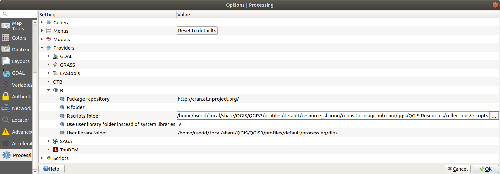

28.10. ပြင်ပ application များကို ပြင်ဆင်သတ်မှတ်ခြင်း (Configuring external applications)
ထပ်ဆောင်း application များကိုအသုံးပြုခြင်းဖြင့် Processing framework ကို ချဲ့ထွင်နိုင်ပါသည်။ ပြင်ပ application များကို မှီခိုအားထားသော algorithm များကို ၎င်းတို့၏ ကိုယ်ပိုင် algorithm provider များမှ စီမံခန့်ခွဲပါသည်။ ထပ်မံဖြည့်စွက်နိုင်သော provider များကို သီးခြား plugin များအဖြစ်တွေ့နိုင်ပြီး QGIS Plugin Manager ကိုအသုံးပြုပြီး ထည့်သွင်းနိုင်ပါသည်။
ယခု section တွင် ထပ်မံဖြည့်စွက်နိုင်သော application များ ပါဝင်လာစေရန် Processing framework ကို မည်သို့ပြင်ဆင်ရမလဲဆိုသည်ကို ဖော်ပြပေးမည်ဖြစ်ပြီး ၎င်းတို့အပေါ်မူတည်ပြီး algorithm ၏သီးခြား လုပ်ဆောင်နိုင်သော feature များကို ရှင်းပြပေးသွားမည် ဖြစ်ပါသည်။ စနစ်ကို မှန်မှန်ကန်ကန် ပြင်ဆင်သတ်မှတ်ပြီးသည်နှင့် တခြား algorithm တွင် လုပ်ဆောင်သည့်အတိုင်း toolbox သို့မဟုတ် model designer ကဲ့သို့အစိတ်အပိုင်းတစ်ခုခုမှ ပြင်ပ algorithm များကို စေခိုင်းလုပ်ဆောင်စေနိုင်မည်ဖြစ်ပါသည်။
ပုံမှန်အားဖြင့် QGIS နှင့် တွဲပါမလာသော ပြင်ပ application များပေါ်တွင် မှီခိုအားထားသော algorithm များကို အသုံးပြုနိုင်အောင် ဖွင့်ထားပေးမည်မဟုတ်ပါ။ မိမိ၏စနစ်ထဲတွင် ထည့်သွင်းပြီးသွားလျှင် Processing settings ထဲတွင် ဝင်ရောက်ပြီး အသုံးပြုနိုင်အောင် ဖွင့်ပေးနိုင်ပါမည်။
28.10.1. Windows အသုံးပြုသူများအတွက် အမှာ (A note for Windows users)
သင်သည် QGIS ကို Windows တွင်အသုံးပြုနေပြီး ကျွမ်းကျွမ်းကျင်ကျင် အသုံးပြုနိုင်သူ တစ်ယောက်မဟုတ်လျှင် ဤအခန်း၏ရှေ့ဆက်ဖတ်ရမည့် အကြောင်းအရာများကို စိတ်ဝင်စားချင်မှ ဝင်စားပါလိမ့်မည်။ QGIS ကို မိမိစနစ်ထဲတွင် standalone (တခြားအရာနှင့်မရောသော သီးသန့်) installer ကိုအသုံးပြုပြီး ထည့်သွင်းခဲ့တာ သေချာပါစေ။ ၎င်းကို install လုပ်ခဲ့လျှင် SAGA နှင့် GRASS ကို အလိုအလျှောက် ထည့်သွင်းပေးပြီး QGIS မှအသုံးပြုနိုင်အောင် အလိုအလျှောက် ပြင်ဆင်သတ်မှတ်ပေးပါလိမ့်မည်။ ၎င်း provider များမှ algorithm များသည် တခြားမည်သည့် ပြင်ဆင်သတ်မှတ်ခြင်း မလိုအပ်တော့ဘဲ အသုံးပြုရန် အဆင်သင့်ဖြစ်နေပါလိမ့်မည်။ OSGeo4W application ဖြင့် ထည့်သွင်းလျှင် SAGA နှင့် GRASS ကိုလည်း ထည့်သွင်းဖို့ ရွေးချယ်ခဲ့တာ သေချာပါစေ။
28.10.2. File format များအတွက် အမှာ (A note on file formats)
ပြင်ပ software ကိုအသုံးပြုနေသောအခါ file တစ်ခုကို QGIS ထဲတွင် ဖွင့်ခြင်းသည် ၎င်း file ကို အခြား software ထဲတွင်ဖွင့်ပြီး process လုပ်ဆောင်နိုင်သည်ဟု ဆိုလိုခြင်းမဟုတ်ပါ။ များသောအားဖြင့် QGIS ထဲတွင်ဖွင့်ထားသည်များကို အခြား software မှ ဖတ်နိုင်ပြီး အချို့ကိစ္စများတွင်တော့ ဖတ်မရခြင်းများ ဖြစ်တတ်ပါသည်။ Database သို့မဟုတ် အသုံးမများသော file format များကို အသုံးပြုနေသောအခါ raster သို့မဟုတ် vector layer များအတွက်ပဲဖြစ်ဖြစ် ပြဿနာများ ကြုံရနိုင်ပါသည်။ ထိုကဲ့သို့ ပြဿနာကြုံရပြီဆိုလျှင် program နှစ်ခုလုံးက နားလည်သော အသုံးများသည့် file format များကို အသုံးပြုပါ။ ထို့နောက် မည်သည့်ပြဿနာဖြစ်နေသည်ကို ရှာဖွေနိုင်ရန် console output (log panel ထဲတွင်) တွင် စစ်ဆေးကြည့်ပါ။
ဥပမာအားဖြင့် ပြင်ပ algorithm ကို GRASS raster layer များဖြင့် ထည့်သွင်းအသုံးပြုလျှင် ပြဿနာကြုံတွေ့ရနိုင်ပြီး လုပ်ဆောင်မှုမပြီးစီးခြင်းမျိုး ဖြစ်နိုင်ပါသည်။ ထို့ကြောင့် ၎င်း layer များသည် algorithm များအတွက် အသုံးပြု၍မရနိုင်ပါ။
သို့သော် QGIS သည် vector layer များကို မူရင်း file format မှ ပြင်ပ application လက်ခံအသုံးပြုနိုင်သော ပုံစံဖြစ်အောင် အလိုအလျှောက်ပြောင်းလဲပေးသောကြောင့် vector layer များတွင် ပြဿနာများ ရှိနိုင်မည်မဟုတ်ပါ။ ထိုသို့လုပ်ဆောင်ပေးခြင်းသည် အချိန်ပိုကြာတတ်ပြီး အထူးသဖြင့် အရွယ်အစားကြီးသော layer များကို လုပ်ဆောင်သောအခါ သိသိသာသာပိုကြာတတ်ပါသည်။ ထို့ကြောင့် DB ချိတ်ဆက်မှုမှ layer တစ်ခုကို လုပ်ဆောင်နေခြင်းသည် အရွယ်အစားတူသော Shapefile format dataset ကို လုပ်ဆောင်ခြင်းထက် ပိုမိုအချိန်ကြာနိုင်ပါသည်။
ပြင်ပ application များကိုအသုံးမပြုသော provider များသည် layer များကို ဆန်းစစ်ခြင်းအတွက် QGIS မှတဆင့် ဖွင့်သောကြောင့် QGIS တွင်ဖွင့်နိုင်သော မည်သည့် layer ကိုမဆို process လုပ်ဆောင်ပေးနိုင်ပါသည်။
QGIS မှထွက်လာသော raster နှင့် vector format များအားလုံးကို input layer များအဖြစ်ထည့်သွင်းအသုံးပြုနိုင်ပါသည်။ တချို့သော provider များသည် တချို့ format များကို ဖွင့်မပေးနိုင်ပါ၊ သို့သော် format အားလုံးကို QGIS မှ နောက်ပိုင်းတွင် အလိုအလျှောက်ပြောင်းလဲပေးနိုင်သော အသုံးများသော format များအဖြစ် ထုတ်ယူနိုင်ပါသည်။ Input layer များအတွက် ပြောင်းလဲပေးရန် လိုအပ်လျှင် လုပ်ဆောင်ချိန်ပိုကြာနိုင်ပါသည်။
28.10.3. Vector layer တွင် ရွေးချယ်ခြင်းအလုပ်များအတွက် အမှာ (A note on vector layer selections)
ပြင်ပ application များသည် QGIS အတွင်း vector layer များထဲတွင်ရှိသော ရွေးချယ်ထားခြင်းများကိုလည်း သိရှိအောင် လုပ်ဆောင်ထားပါသည်။ သို့သော် input vector layer များသည် ပြင်ပ application မှ မသိနားမလည်သော format ဖြစ်နေလျှင် ၎င်းတို့အားလုံးကို ပြန်လည်ပြင်ဆင် ရေးသားရန်လိုအပ်ပါသည်။ ရွေးချယ်ထားခြင်းမရှိခြင်း သို့မဟုတ် ရွေးချယ်ထားသော feature များကိုသာအသုံပြုခြင်း option ကို processing general configuration ထဲတွင် ဖွင့်ထားခြင်းမရှိသောအခါမှသာ layer တစ်ခုကို ပြင်ပ application ထဲသို့ တိုက်ရိုက်ပေးပို့နိုင်မည်ဖြစ်ပါသည်။
အချို့ကိစ္စများတွင် ရွေးချယ်ထားသော feature များကိုသာ export ထုတ်ခြင်းသည် လိုအပ်ပြီး အလုပ်လုပ်ဆောင်ချိန်ပိုကြာတတ်ပါသည်။
28.10.4. SAGA
QGIS ထည့်သွင်းစဉ်မှာ SAGS ကိုထည့်သွင်းခဲ့လျှင် SAGA algorithms များကို QGIS မှ လုပ်ဆောင်နိုင်ပါသည်။
Window ကိုအသုံးပြုလျှင် stand-alone installer နှင့် OSGewo4W installer နှစ်မျိုးလုံးတွင် SAGA ပါဝင်ပါသည်။
28.10.4.1. SAGA grid စနစ်၏ ကန့်သတ်ချက်များအကြောင်း (About SAGA grid system limitations)
Input raster layer များစွာလိုအပ်သော SAGA algorithm အများစုသည် တူညီသော grid စနစ်ရှိရန် လိုအပ်ပါသည်။ မြေမျက်နှာသွင်ပြင်အကျယ်အဝန်းတူရန်လိုအပ်သလို cell size လည်းတူရပါမည်၊ ထိုမှသာ သက်ဆိုင်သော grid များ ကိုက်ညီမည်ဖြစ်ပါသည်။ SAGA ကို QGIS မှ ဖွင့်ပြီးအသုံးပြုသောအခါ cell size နှင့် extent ကို ထည့်သွင်းစဉ်းစားစရာမလိုပဲ မည်သည့် layer ကိုမဆို ထည့်သွင်းအသုံးပြုနိုင်ပါသည်။ Raster layer များစွာကို SAGA algorithm တစ်ခုအတွက် input အဖြစ်ထည့်သွင်းအသုံးပြုသောအခါ QGIS သည် ၎င်း layer အားလုံးကို အသုံးများသော ဘုံ grid စနစ်တစ်ခုကို ပြောင်းလဲလိုက်ပြီးမှ SAGA ဆီကိုပို့ဆောင်ပေးပါသည် (SAGA algorithm သည် မတူညီသော grid စနစ်များမှ layer များဖြင့် အလုပ်မလုပ်ဆောင်နိုင်သောအခါတွင်)။
အသုံးများသော ဘုံ grid စနစ်၏ အဓိပ္ပါယ်သတ်မှတ်ချက်ကို အသုံးပြုသူမှ သတ်မှတ်ပေးတာဖြစ်ပြီး ထိုသို့လုပ်ဆောင်ရန် settings window ၏ SAGA အုပ်စုထဲတွင် parameter များစွာတွေ့ရမည်ဖြစ်သည်။ အသုံးပြုလိုသော grid စနစ်ကို သတ်မှတ်ရန် နည်းလမ်း နှစ်မျိုးရှိပါသည်-
အသုံးပြုသူမှ သတ်မှတ်ပေးခြင်း။ အောက်ပါ parameter များ၏ တန်ဖိုးများဖြင့် extent သတ်မှတ်ပေးနိုင်ပါသည် -
Resampling min X (ပြန်လည်ချိန်ညှိမည့် အနည်းဆုံး X တန်ဖိုး)
Resampling max X (ပြန်လည်ချိန်ညှိမည့် အများဆုံး X တန်ဖိုး)
Resampling min Y (ပြန်လည်ချိန်ညှိမည့် အနည်းဆုံး Y တန်ဖိုး)
Resampling max Y (ပြန်လည်ချိန်ညှိမည့် အများဆုံး Y တန်ဖိုး)
Resampling cellsize (ပြန်လည်ချိန်ညှိမည့် cellsize)
အသုံးပြုသော input layer များသည် ၎င်း extent နှင့် ထပ်မနေလျှင် QGIS သည် input layer များကို ထို extent သို့ resampling လုပ်ဆောင်ပေးမည်ဖြစ်သည်။
ထည့်သွင်းအသုံးပြုသော input layer များမှ အလိုအလျှောက် သတ်မှတ်ပေးခြင်း။ ဤနည်းလမ်းကို လုပ်ဆောင်ရန်အတွက် Use min covering grid system for resampling (ပြန်လည်ညှိနှိုင်းရန်အတွက် အနည်းဆုံး covering grid စနစ်ကိုအသုံးပြုခြင်း) ကိုအမှန်ခြစ်ပေးပါ။ အခြား သတ်မှတ်ချက်များအားလုံးကို လျစ်လျှူရှုပြီး ထည့်သွင်းသော input layer များအားလုံးကို လွှမ်းခြုံသော အနည်းဆုံး extent ကို အသုံးပြုပါလိမ့်မည်။ ထွက်လာမည့် layer ၏ cell size သည် ထည့်သွင်းအသုံးပြုသော input layer များ၏ cell size အားလုံးထဲမှ အကြီးဆုံးတန်ဖိုး ဖြစ်ပါသည်။
များစွာသော raster layer များကို အသုံးမပြုသော သို့မဟုတ် သီးသန့် input grid စနစ်ကို မလိုအပ်သော algorithm များအတွက် SAGA ကိုခေါ်ယူအသုံးမပြုမီ resampling ကို လုပ်ဆောင်မည်မဟုတ်ပါ၊ ထို့နောက် ၎င်း parameter များကိုလည်း အသုံးပြုမည် မဟုတ်ပါ။
28.10.4.2. Band များပါ layer များအတွက် ကန့်သတ်ချက်များ (Limitations for multi-band layers)
QGIS နှင့်မတူဘဲ SAGA သည် band များစွာပါသော layer များဖြင့် အလုပ်လုပ်ဆောင်ခြင်း မရှိပါ။ Band များစွာပါသော layer များ (RGB သို့မဟုတ် ရောင်စဉ်လှိုင်းများစွာပါသော ဓာတ်ပုံများ) ကိုအသုံးပြုလိုလျှင် ၎င်းကို band တစ်ခုတည်းပါသော (single-banded) ဓာတ်ပုံများအဖြစ် ဦးစွာ ခွဲထုတ်ပစ်ရပါမည်။ ထိုသို့လုပ်ဆောင်ရန် ‘SAGA/Grid - Tools/Split RGB image’ algorithm (RGB ဓာတ်ပုံတစ်ခုကို ဓာတ်ပုံသုံးပုံ ဖန်တီးပေးသော) သို့မဟုတ် ‘SAGA/Grid - Tools/Extract band’ algorithm (band တစ်ခုချင်းစီခွဲထုတ်ပေးသော tool) ကို အသုံးပြုနိုင်ပါသည်။
28.10.4.3. Cell size ကန့်သတ်ချက်များ (Limitations in cell size)
Raster layer များသည် X နှင့် Y ဝင်ရိုးများတွင် တူညီသော cell size ရှိသည်ဟု SAGA မှယူဆပါသည်။ ရေပြင်ညီနှင့် ဒေါင်လိုက် cell size တန်ဖိုးများမတူညီသော layer တစ်ခုကို အသုံးပြုနေလျှင် မမျှော်လင့်ထားသော ရလာဒ်များ ထွက်လာနိုင်ပါသည်။ ဤကိစ္စမျိုးတွင် ထည့်သွင်းအသုံးပြုသော input layer သည် SAGA နှင့် process လုပ်ဆောင်ရန် မသင့်တော်ကြောင်း ဖော်ပြသည့် သတိပေးစာတစ်ခု processing log တွင် ပေါ်လာပါလိမ့်မည်။
28.10.4.4. လုပ်ဆောင်ချက်မှတ်တမ်းတင်ခြင်း (Logging)
QGIS မှ SAGA ကို ခေါ်ယူအသုံးပြုသောအခါ ၎င်း၏ command-line interface ကို အသုံးပြုပါသည်၊ ထို့ကြောင့် လိုအပ်သော လုပ်ဆောင်မှုများအားကို လုပ်ဆောင်ရန် command တချို့ကို အသုံးပြုပေးရပါသည်။ လုပ်ဆောင်ပြီးစီးနေသော ပမာဏရာခိုင်နှုန်း နှင့် အခြားအချက်အလက်များကို SAGA သည် console ထဲတွင် ရေးသားဖော်ပြပေးပါသည်။ ရလာသော ရလာဒ်ကို စစ်ထုတ်ပြီး algroithm ကို လုပ်ဆောင်နေစဉ်အတွင်း ပြီးစီးမှုပမာဏကို update ပြင်ဆင်ဖော်ပြပေးပါသည်။
QGIS မှ ပို့ဆောင်လိုက်သော command များနှင့် SAGA မှ ဖော်ပြပေးသော ထပ်ဆောင်းအချက်အလက်များကို အခြား processing log စာသားများနှင့်အတူ မှတ်တမ်းရေးပေးနိုင်ပါသည်။ ထို့ကြောင့် QGIS မှ SAGA algorithm ကို အသုံးပြုသောအခါ ဖြစ်ပျက်နေမှုများကို ခြေရာခံ ကြည့်ရှုနိုင်မည်ဖြစ်ပါသည်။ Logging mechanism ဖွင့်ပေးရန် Log console output နှင့် Log execution commands ဟုခေါ်သော setting နှစ်ခုရှိပါသည်။
ပြင်ပ application များကိုအသုံးပြုပြီး command-line မှ ၎င်းတို့ကို ခေါ်ယူအသုံးပြုသော အခြား provider အများစုတွင် ဆင်တူသော option များရှိပါသည်။ ထို့ကြောင့် ၎င်းတို့ကိုလည်း processing settings စာရင်းထဲရှိ အခြားနေရာများတွင် တွေ့ရနိုင်မည်ဖြစ်သည်။
28.10.5. R script များ
Processing တွင် R ကိုအသုံးပြုနိုင်စေရန် Processing R Provider plugin ထည့်သွင်းရန်လိုအပ်ပြီး QGIS အတွက် R ကိုပြင်ဆင်သတ်မှတ်ရန် လိုအပ်ပါသည်။
၏ Processing tab ထဲရှိ တွင် ပြင်ဆင်သတ်မှတ်ခြင်းကို လုပ်ရပါမည်။
ကိုယ်အသုံးပြုနေသော operating system ပေါ်မူတည်ပြီး R binary များမည်သည့်နေရာတွင် ထားမည်ဆိုသည်ကို သတ်မှတ်ရန် R folder ကိုအသုံးပြုနိုင်ပါသည်။
Note
Windows ကွန်ပျူတာများတွင် R ကိုအသုံးပြုပြီး လုပ်ဆောင်နိုင်သော file များကို ပုံမှန်အားဖြင့် C:\Program Files\R\ အောက်ရှိ (R-<version>) folder ထဲတွင် ရှိပါသည်။ Folder တည်နေရာကိုသာ သတ်မှတ်ရမည်ဖြစ်ပြီး binary ရဲ့ နေရာကို သတ်မှတ်ရမည် မဟုတ်ပါ။
Linux ကွန်ပျူတာများတွင် R folder သည် PATH environment variable ထဲတွင် ရှိနေစေရန်သာ ပြုလုပ်ပေးရမည်ဖြစ်သည်။ Terminal window ထဲရှိ R သည် R ကို စတင်ပေးလျှင် ဆက်လက်လုပ်ဆောင်ရန် အဆင်သင့်ဖြစ်နေပြီ ဖြစ်ပါသည်။
Processing R Provider plugin ကိုထည့်သွင်းပြီးသည်နှင့် Processing Toolbox ထဲတွင် ဥပမာ script အချို့ကိုတွေ့ရပါလိမ့်မည် -
Scatterplot သည် အသုံးပြုသော vector layer ၏ ကိန်းဂဏန်း field နှစ်ခုမှ scatter plot တစ်ခုကို ဖန်တီးပေးသော R function တစ်ခုကို လုပ်ဆောင်ပေးပါသည်။
test_sf သည် sf` package ပေါ်မူတည်ပြီး တချို့သော လုပ်ငန်းဆောင်တာများကို လုပ်ဆောင်ပေးပြီး R package
sfကိုထည့်သွင်းထား/မထား ဆိုသည်ကို စစ်ဆေးနိုင်ပါသည်။ Package ကိုထည့်သွင်းမထားလျှင် Processing options ထဲရှိ တွင်သတ်မှတ်ထားသော Package repository ကိုအသုံးပြုပြီး R မှ ထည့်သွင်းပေးပါလိမ့်မည် (၎င်းမီခိုနေသော package များအားလုံးကိုလည်း ထည့်သွင်းပါသည်)။ မူရင်းမှာ https://cran.r-project.org/ ဖြစ်ပါသည်။ ထည့်သွင်းခြင်းသည် အချိန်အတိုင်းအတာ တစ်ခုထိကြာနိုင်ပါသည်။test_sp ကိုအသုံးပြုပြီး R package
spကိုထည့်သွင်းထား/မထား ဆိုသည်ကို စစ်ဆေးနိုင်ပါသည်။ Package ကိုထည့်သွင်းမထားလျှင် R မှ အလိုအလျှောက်ထည့်သွင်းပေးပါလိမ့်မည်။

QGIS အတွက် R ကို မှန်မှန်ကန်ကန် ပြင်ဆင်သတ်မှတ်ထားပြီးလျှင် ၎င်း script များကို အသုံးပြုလုပ်ဆောင်နိုင်ပါလိမ့်မည်။
28.10.5.1. R script များထည့်သွင်းခြင်း (Adding R scripts from the QGIS collection)
R ကို QGIS ထဲတွင် ပေါင်းစပ်ထည့်သွင်းအသုံးပြုခြင်းသည် ကြိုတင်သတ်မှတ်ထားသော algorithm များအစုတစ်ခုမရှိသောကြောင့် SAGA နှင့်ကွာခြားပါသည် (Processing R Provider plugin ဖြင့်ပါလာသော တချို့ ဥပမာ script များ မှလွဲ၍)
QGIS Repository ထဲတွင် ဥပမာ R script များရှိပါသည်။ QGIS Resource Sharing plugin ကိုအသုံးပြုပြီး ၎င်းတို့ကို ထည့်သွင်းအသုံးပြုရန် အောက်ပါ လမ်းညွှန်အဆင့်များကို လုပ်ဆောင်ပါ။
QGIS Resource Sharing plugin ကိုထည့်သွင်းပါ (Plugin Manager Settings ထဲတွင် Show also experimental plugins ကိုဖွင့်ထားပေးရန် လိုအပ်ကောင်းလိုအပ်နိုင်ပါသည်)
၎င်းကိုဖွင့်လိုက်ပါ (Plugins –> Resource Sharing –> Resource Sharing)
Settings tab ကိုရွေးချယ်ပါ
Reload repositories ကို click နှိပ်ပါ
All tab ကိုရွေးချယ်ပါ
စာရင်းထဲရှိ QGIS R script collection ကိုရွေးချယ်ပြီး Install ခလုတ်ကိုနှိပ်ပါ
စုစည်းရွေးချယ်ထားမှုကို Installed tab ထဲတွင် စာရင်းဖြင့်ဖော်ပြနေသင့်ပါသည်
Plugin ကိုပိတ်လိုက်ပါ
Processing Toolbox ကိုဖွင့်ပါ၊ အရာအားလုံးအဆင်ပြေနေလျှင် ဥပမာ script များသည် R အောက်တွင် အုပ်စုအမျိုးမျိုးဖြင့် ရှိနေပါမည် (အုပ်စုအချို့ကိုသာ အောက်မှာဖော်ပြထားသော screenshot အတိုင်း ဖြန့်ကာပြသပေးမည်ဖြစ်ပါသည်)

Fig. 28.36 R script အချို့ကို ပြသထားသော Processing Toolbox
အပေါ်ဆုံးတွင်ရှိနေသော script များသည် Processing R Provider plugin မှ ဥပမာ script များဖြစ်ပါသည်။
အချို့အကြောင်းများကြောင့် Processing Toolbox ထဲတွင် script များမတွေ့ပဲ အသုံးပြုလို့မရလျှင် အောက်ပါနည်းလမ်းကို လုပ်ဆောင်ကြည့်ပါ -
Processing settings ကိုဖွင့်ပါ ( tab)
သို့သွားပါ
Ubuntu ကွန်ပျူတာများတွင် file လမ်းကြောင်းကို အောက်ပါအတိုင်းသတ်မှတ်ပါ (သို့မဟုတ် လမ်းကြောင်းထဲတွင် ပါနေတာ ပိုကောင်းပါသည်)
/home/<user>/.local/share/QGIS/QGIS3/profiles/default/resource_sharing/repositories/github.com/qgis/QGIS-Resources/collections/rscripts
 Windows ကွန်ပျူတာများတွင် file လမ်းကြောင်းကို အောက်ပါအတိုင်းသတ်မှတ်ပါ (သို့မဟုတ် လမ်းကြောင်းထဲမှာ ပါနေတာ ပိုကောင်းပါသည်)
C:\Users\<user>\AppData\Roaming\QGIS\QGIS3\profiles\default\resource_sharing\repositories\github.com\qgis\QGIS-Resources\collections\rscripts
တည်းဖြတ်ပြင်ဆင်ရန် double-click နှိပ်ပါ။ ထို့နောက် လမ်းကြောင်းကို ကူးထည့်ခြင်း/ရိုက်ထည့်ခြင်း ကိုလုပ်ဆောင်ပါ သို့မဟုတ် … ခလုတ်ကိုအသုံးပြုခြင်းဖြင့် လမ်းကြောင်းကို ညွှန်ပြပေးလိုက်ပါ၊ ထို့နောက် ပွင့်လာသော dialog ထဲတွင် Add ခလုတ်ကို နှိပ်ပါ။ လမ်းကြောင်းများစွာ ပေါ်လာနိုင်ပါသည်။ ၎င်းတို့ကို semicolon (“;”) ဖြင့်ပိုင်းခြားထားပါသည်။

QGIS 2 on-line စုစည်းမှုမှ R script များအားလုံးကို ရယူလိုလျှင် QGIS R script collection အစား QGIS R script collection (QGIS 2 မှ) ကိုရွေးချယ်နိုင်ပါသည်။ ထည့်သွင်းအသုံးပြုသော input vector သို့မဟုတ် output ရလာဒ်ပေါ်မူတည်သော script များသည် အလုပ်မလုပ်ဆောင်သည်ကို တွေ့ကောင်းတွေ့ပါလိမ့်မည်။
28.10.5.2. R script များ ဖန်တီးခြင်း (Creating R scripts)
R တွင်လုပ်ဆောင်သလိုမျိုး script များရေးပြီး R command များကိုခေါ်ယူအသုံးပြုနိုင်ပါသည်။ ယခု section တွင် QGIS ထဲ၌ R command များအတွက် syntax (ဝါကျဖွဲ့ပုံ) များနှင့် ၎င်းထဲတွင် QGIS object (layer များ၊ ဇယားများ) များကို မည်သို့အသုံးပြုရမည်ကို ဖော်ပြပေးသွားပါမည်။
R function ကိုခေါ်ယူအသုံးပြုသော algorithm တစ်ခုကိုထည့်သွင်းအသုံးပြုရန် (သို့မဟုတ် ကိုယ်တိုင်ရေးသားထားသော အဆင့်မြင့်ရှုပ်ထွေးသော R script ကို QGIS တွင် အသုံးပြုလိုလျှင်) R command များကိုလုပ်ဆောင်သော script file တစ်ခုကို ဖန်တီးရန် လိုအပ်ပါသည်။
R script file များသည် .rsx extension ရှိပြီး R syntax နှင့် R script ရေးသားနည်း အနည်းငယ်သိရှိလျှင် ၎င်းတို့ကိုဖန်တီးရာတွင် လွယ်ကူပါသည်။ ၎င်းတို့ကို R scripts folder ထဲတွင် သိမ်းဆည်းထားသင့်ပါသည်။ Folder (R scripts folder) ကို Processing settings dialog ထဲရှိ R settings အုပ်စုထဲတွင် သတ်မှတ်ပေးနိုင်ပါသည်။
အသုံးပြုထားသော polygon layer ထဲရှိ polygon များ၏ နယ်နိမိတ် အတွင်းရှိ ကျပန်း grid တစ်ခုကိုဖန်တီးရန် R method spsample ကိုခေါ်ယူအသုံးပြုသော အလွန်လွယ်ကူရိုးရှင်းသော script file တစ်ခုကို ကြည့်ကြပါမည်။ ဤနည်းလမ်းသည် maptools package တွင် ပါဝင်ပါသည်။ QGIS တွင် အသုံးပြုမည့် algorithm များအားလုံးနီးပါးသည် spatial data ကို အသုံးပြုမည် သို့မဟုတ် ဖန်တီးမည် ဖြစ်သောကြောင့် maptools နှင့် sp/ sf ကဲ့သို့သော spatial package များအကြောင်းသိရှိထားခြင်းသည် အလွန်အသုံးဝင်ပါသည်။
##Random points within layer extent=name
##Point pattern analysis=group
##Vector_layer=vector
##Number_of_points=number 10
##Output=output vector
library(sp)
spatpoly = as(Vector_layer, "Spatial")
pts=spsample(spatpoly,Number_of_points,type="random")
spdf=SpatialPointsDataFrame(pts, as.data.frame(pts))
Output=st_as_sf(spdf)
Double Python comment sign (##) နှင့်စသော ပထမဆုံး စာကြောင်းများသည် ပြသမည့်အမည်နှင့် script အုပ်စုကို သတ်မှတ်ပေးပြီး ၎င်း၏ input များနှင့် output များအကြောင်း QGIS ကိုပြောပြပါသည်။
Note
ကိုယ်ပိုင် R script များရေးသားနည်းအကြောင်းပိုမိုလေ့လာရန် training manual ထဲရှိ R Intro section ကိုကြည့်ပြီး QGIS R Syntax section မှ အကြံဉာဏ်ရယူပါ။
Input parameter တစ်ခုကိုသတ်မှတ်ကြေညာသောအခါ QGIS သည် ၎င်းကို အကြောင်းအရာ နှစ်ခုအတွက် အသုံးပြုပါသည် - ၎င်း parameter ၏တန်ဖိုးအတွက် ဖြည့်စွက်ရန် user interface ဖန်တီးခြင်း နှင့် R function input အဖြစ် အသုံးပြုနိုင်သော သက်ဆိုင်ရာ R variable တစ်ခုဖန်တီးခြင်း။
အထက်ဖော်ပြပါ ဥပမာတွင် Vector_layer ဟုအမည်ပေးထားသော vector အမျိုးအစား input တစ်ခုကို သတ်မှတ်ပြီးသားဖြစ်ပါသည်။ Algorithm ကိုစေခိုင်းလုပ်ဆောင်သောအခါ QGIS သည် အသုံးပြုသူမှ ရွေးချယ်ထားသော layer ကိုဖွင့်ပေးမည်ဖြစ်ပြီး Vector_layer ဟုအမည်ပေးထားသော variable တစ်ခုထဲတွင် သိမ်းဆည်းပေးပါသည်။ ထို့ကြောင့် parameter တစ်ခု၏ အမည်သည် ၎င်း parameter ၏တန်ဖိုးကို ရယူရန် R ထဲတွင်အသုံးပြုသော variable ၏နာမည်ဖြစ်ပါသည် (ထို့ကြောင့် parameter နာမည်များအဖြစ် သီးသန့် R စာလုံးများကိုထည့်မသုံးသင့်ပါ)။
Vector နှင့် raster layer များကဲ့သို့ spatial parameter များကို st_read() (သို့မဟုတ် readOGR) နှင့် brick() (သို့မဟုတ် readGDAL) command များကိုအသုံးပြုပြီး ဖတ်ပါသည် (description file တွင် ၎င်း command များထည့်ပေါင်းခြင်းအတွက် စိတ်ပူစရာမလိုပါဘူး – QGIS မှ လုပ်ဆောင်သွားပါလိမ့်မည်)၊ ထို့နောက် ၎င်းတို့ကို sf (သို့မဟုတ် Spatial*DataFrame) object များအဖြစ် သိမ်းဆည်းပေးထားပါသည်။
ရွေးချယ်ထားသော field ၏အမည်ပါသော စာသားများအဖြစ် ဇယား field များကို သိမ်းဆည်းထားပါသည်။
Vector file များကို ##load_vector_using_rgdal ကိုသတ်မှတ်ခြင်းအားဖြင့် st_read() ကိုအသုံးပြုမည့်အစား readOGR() command ကိုအသုံးပြုပြီး ဖတ်နိုင်ပါသည်။ ဤနည်းလမ်းသည် sf object အစား Spatial*DataFrame object တစ်ခုကို ဖန်တီးပေးပါသည်။
Raster file များကို ##load_raster_using_rgdal ကိုသတ်မှတ်ခြင်းအားဖြင့် brick() ကိုအသုံးပြုမည့်အစား readGDAL() command ကိုအသုံးပြုပြီး ဖတ်နိုင်ပါသည်။
ကိုယ်ကကျွမ်းကျင်စွာအသုံးပြုနိုင်သူတစ်ဦးဖြစ်ပြီး layer အတွက် object ဖန်တီးရန် QGIS ကိုအသုံးမပြုလိုလျှင် filename ဖြင့် စာသားတစ်ခုကို ပိုမိုနှစ်သက်ကြောင်း ဖော်ပြရန် ##pass_filenames ကိုအသုံးပြုနိုင်ပါသည်။ ဤအခြေအနေမျိုးတွင် ၎င်းပါဝင်သော data ကို လုပ်ဆောင်မှုတစ်ခုခု မလုပ်ခင်တွင် file ကိုဖွင့်/မဖွင့် ဆိုသည်မှာ မိမိသဘောအတိုင်း ဖြစ်ပါသည်။
အထက်ဖော်ပြပါအချက်အလက်များဖြင့် R script ၏ ပထမ စာကြောင်းများကို နားလည်နိုင်ပါသည် (Python comment character နှင့် မစသော ပထမဆုံးစာကြောင်းကို ဆိုလိုသည်)။
library(sp)
spatpoly = as(Vector_layer, "Spatial")
pts=spsample(polyg,numpoints,type="random")
spsample function ကို sp library မှပံ့ပိုးပေးထားသောကြောင့် ပထမဆုံးလုပ်ရမည်မှာ library ကိုခေါ်ယူထည့်သွင်းရမည်ဖြစ်ပါသည်။ Variable Vector_layer တွင် sf object တစ်ခုပါဝင်ပါသည်။ sp library မှ spsample function ကိုအသုံးပြုမည်ဖြစ်သောကြောင့် as function ကိုအသုံးပြုပြီး sf object ကို SpatialPolygonsDataFrame object တစ်ခုအဖြစ်ပြောင်းလဲပေးရပါမည်။
ထို့နောက် ၎င်း object နှင့် numpoints input parameter (ထွက်လာမည့် အမှတ်အရေအတွက်ကို သတ်မှတ်ပေးသော) တို့နှင့်အတူ spsample function ကိုခေါ်ယူအသုံးပြုပါမည်။
Output vector file နာမည်ကို Output ဟု သတ်မှတ်ကြေညာထားသောကြောင့် sf object တစ်ခုပါဝင်သော Output ဟုအမည်ပေးထားသော variable တစ်ခုဖန်တီးပေးရပါမည်။
၎င်းကို အဆင့် နှစ်ဆင့်ဖြင့်ပြုလုပ်ရပါမည်။ ပထမအဆင့်တွင် SpatialPointsDataFrame function ကိုအသုံးပြုပြီး ရလာသောရလာဒ်မှ SpatialPolygonsDataFrame object တစ်ခုကိုဖန်တီးရပါမည်။ ထို့နောက် st_as_sf function (sf library ၏) ကိုအသုံးပြုပြီး ၎င်း object ကို sf object အဖြစ်ပြောင်းလဲပေးရပါမည်။
ကြားခံ variable များအတွက် ကိုယ်ကြိုက်နှစ်သက်သည့် အမည်များကို အသုံးပြုနိုင်ပါသည်။ နောက်ဆုံးရလာဒ်ကို သိမ်းဆည်းထားပေးသော Variable တွင် သတ်မှတ်ထားသောနာမည် (Output ကိုဆိုလိုသည်) နှင့် သင့်တော်သော တန်ဖိုးတစ်ခု (vector layer output အတွက် sf object တစ်ခု) ပါဝင်တာသေချာရန်လိုအပ်ပါသည်။
ဒီကိစ္စတွင် spsample နည်းလမ်းကရရှိလာသော ရလာဒ်သည် QGIS ကို ပြန်ပို့လို့မရသည့် ppp အမျိုးအစား object တစ်ခုဖြစ်တာကြောင့် ၎င်း ကို SpatialPointsDataFrame object ကတစ်ဆင့် sf object တစ်ခုအဖြစ်သို့ ပြည့်ပြည့်စုံစုံ ပြောင်းလဲပေးရပါမည်။
Algorithm သည် raster layer များဖန်တီးပေးလျှင် သိမ်းဆည်းသောနည်းလမ်းသည် ##dontuserasterpackage နည်းလမ်းကိုအသုံးပြုထားလား အသုံးမပြုထားလား ဆိုသည့်အပေါ် မူတည်ပါလိမ့်မည်။ အသုံးပြုထားလျှင် writeGDAL() နည်းလမ်းကိုအသုံးပြုပြီး layer များကို သိမ်းဆည်းပါသည်။ အသုံးမပြုထားလျှင် raster package မှ writeRaster() နည်းလမ်းကိုအသုံးပြုပါလိမ့်မည်။
##pass_filenames နည်းလမ်းကိုအသုံးပြုထားလျှင် raster package (writeRaster() ဖြင့်) ကိုအသုံးပြုပြီး ရလာဒ်များကို ဖန်တီးပါသည်။
Algorithm သည် layer တစ်ခုကိုဖန်တီးမပေးပဲ console ထဲတွင် စာသားရလာဒ်ကိုဖော်ပြပေးလျှင် လုပ်ဆောင်တာပြီးသည်နှင့် console ထဲတွင်ဖော်ပြလိုသည်ကို ညွှန်းပေးရန် လိုအပ်ပါသည်။ ထို့သို့ပြုလုပ်ရန် print ထုတ်လိုသော ရလာဒ်များကိုထုတ်ပေးသော command line များကို > (‘greater than’) သင်္ကေတဖြင့်စတင်ရေးသားပါ။ > နှင့်စသော line များမှ ရလာဒ်များကိုသာ ဖော်ပြပေးပါလိမ့်မည်။ ဥပမာအားဖြင့် vector layer တစ်ခု၏ အချက်အလက်ဇယား၏ column တစ်ခုပေါ်မှာ ပုံမှန်ဖြစ်ခြင်းစမ်းသပ်မှု (normality test) တစ်ခု လုပ်ဆောင်ပေးသည့် algorithm တစ်ခု၏ file description ကို အောက်တွင်ဖော်ပြထားပါသည် -
##layer=vector
##field=field layer
##nortest=group
library(nortest)
>lillie.test(layer[[field]])
နောက်ဆုံး line ၏ ရလာဒ်ကို print ထုတ်ပေးပါသည် သို့သော် ပထမဆုံး line ၏ရလာဒ်ကို ဖော်ပြမပေးပါ (QGIS မှအလိုအလျှောက်ထည့်ထားသော အခြား command line များမှ ရလာဒ်များကိုလည်း မဖော်ပြပေးပါ)။
Algorithm သည် graphic တစ်မျိုးမျိုးကို ဖန်တီးပေးလျှင် (plot() နည်းလမ်းကိုအသုံးပြုခြင်းဖြင့်) အောက်ပါ line ကို ထည့်သွင်းအသုံးပြုပါ (output_plots_to_html သည် showplots ဖြစ်လေ့ရှိပါသည်) -
##output_plots_to_html
ဤနည်းလမ်းသည် R တွင်လုပ်ဆောင်မှုပြီးစီးသည်နှင့် ဖွင့်ပေးမည့် ယာယီ file တစ်ခုဆီသို့ R graphic ရလာဒ်များကို ပြန်လည်လမ်းညွှန်ပေးရန် QGIS ကို လုပ်ဆောင်စေပါသည်။
Graphic များနှင့် console ရလာဒ် နှစ်မျိုးလုံးကို processing results manager မှတဆင့် ရရှိမည်ဖြစ်ပါသည်။
ပိုမိုသိရှိလိုလျှင် တရားဝင် QGIS စုစည်းမှုထဲရှိ R script များကို ကြည့်ပါ (အခြားနေရာများတွင် ရှင်းပြထားသကဲ့သို့ QGIS Resource Sharing plugin ကိုအသုံးပြုပြီး download ရယူပြီး ထည့်သွင်းပါ)။ ၎င်းတို့အများစုသည် လွယ်ကူရိုးရှင်းပြီး ကိုယ်ပိုင် script များရေးသားနိုင်အောင် များစွာအကူအညီပြုပါလိမ့်မည်)။
Note
sf ၊ rgdal နှင့် raster library များသည် default အနေဖြင့် ထည့်သွင်းထားတာဖြစ်သောကြောင့် သက်ဆိုင်ရာ library() command များကိုထည့်သွင်းရန် မလိုအပ်တော့ပါ။ သို့သော် အသုံးပြုရန်လိုအပ်သော အခြား library များကို စာရိုက်ပြီး ခေါ်ယူထည့်သွင်းရပါမည် - library(ggplot2) (ggplot2 library ကိုခေါ်ယူထည့်သွင်းရန်)။ မိမိကွန်ပျူတာထဲတွင် package ကို ထည့်သွင်းမထားရသေးလျှင် processing မှ အလိုအလျှောက် download ရယူပြီး ထည့်သွင်းပါလိမ့်မည်။ ဤနည်းလမ်းဖြင့် R Standalone တွင်လည်း package များကို အသုံးပြုနိုင်မည်ဖြစ်ပါသည်။ Package ကို download ပြုလုပ်ရန်လိုအပ်လျှင် ပထဆုံးအကြိမ်လုပ်ဆောင်သောအခါ script သည် အချိန်ပိုကြာတတ်သည်ကို သတိပြုပါ။
28.10.6. R library များ
R script sp_test သည် R package များဖြစ်သော sp နှင့် raster ကိုခေါ်ယူထည့်သွင်းရန် လုပ်ဆောင်ပေးပါသည်။
28.10.6.1. sf_test ကိုအသုံးပြုနေစဉ် ထည့်သွင်းသော R library များ
R script sp_test သည် R package များဖြစ်သော sp နှင့် raster ကိုခေါ်ယူထည့်သွင်းရန် ကြိုးစားပါသည်။ ၎င်း package နှစ်ခုကို ထည့်သွင်းမထားလျှင် R သည် ၎င်းတို့ကို ခေါ်ယူထည့်သွင်းပါလိမ့်မည် (၎င်းတို့မှီခိုသော library များအားလုံးအပါအဝင်)။
Ubuntu ကွန်ပျူတာတွင် Processing R Provider plugin version 2.0 နှင့် အသစ်ထည့်သွင်းထားသော R 3.4.4 (apt package r-base-core သာ) တို့ဖြင့် Processing Toolbox မှ sf_test ကို လုပ်ဆောင်ပြီးနောက်တွင် အောက်ပါ R library များသည် ~/.local/share/QGIS/QGIS3/profiles/default/processing/rscripts တွင် အဆုံးသတ်သွားပါသည် -
abind, askpass, assertthat, backports, base64enc, BH, bit, bit64, blob, brew, callr, classInt, cli, colorspace, covr, crayon, crosstalk, curl, DBI, deldir,
desc, dichromat, digest, dplyr, e1071, ellipsis, evaluate, fansi, farver, fastmap, gdtools, ggplot2, glue, goftest, gridExtra, gtable, highr, hms,
htmltools, htmlwidgets, httpuv, httr, jsonlite, knitr, labeling, later, lazyeval, leafem, leaflet, leaflet.providers, leafpop, leafsync, lifecycle, lwgeom,
magrittr, maps, mapview, markdown, memoise, microbenchmark, mime, munsell, odbc, openssl, pillar, pkgbuild, pkgconfig, pkgload, plogr, plyr, png, polyclip,
praise, prettyunits, processx, promises, ps, purrr, R6, raster, RColorBrewer, Rcpp, reshape2, rex, rgeos, rlang, rmarkdown, RPostgres, RPostgreSQL,
rprojroot, RSQLite, rstudioapi, satellite, scales, sf, shiny, sourcetools, sp, spatstat, spatstat.data, spatstat.utils, stars, stringi, stringr, svglite,
sys, systemfonts, tensor, testthat, tibble, tidyselect, tinytex, units, utf8, uuid, vctrs, viridis, viridisLite, webshot, withr, xfun, XML, xtable
28.10.7. GRASS
GRASS ကိုပြင်ဆင်သတ်မှတ်ခြင်းသည် SAGA ကိုပြင်ဆင်သတ်မှတ်ခြင်းနှင့် များစွာခြားနားခြင်းမရှိပါ။ ပထမဆုံးအနေဖြင့် GRASS folder ကိုသွားမည့် လမ်းကြောင်းကို သတ်မှတ်ပေးရပါမည်၊ သို့သော် Windows ကိုအသုံးပြုမှသာ ထို့သို့လုပ်ပေးရန် လိုအပ်ပါသည်။
ပုံမှန်အားဖြင့် Processing framework သည် QGIS နှင့်တွဲပါလာသော GRASS distribution ကိုအသုံးပြုရန် GRASS connector ကို ပြင်ဆင်သတ်မှတ်ရန် ကြိုးစားပါသည်။ စနစ်အများစုအတွက် ၎င်းနည်းလမ်းသည် အခက်အခဲမရှိပဲလုပ်ဆောင်သင့်ပါသည်၊ သို့သော် အခက်အခဲပြဿနာ တစ်စုံတစ်ရာရှိပါက GRASS connector ကို ကိုယ်တိုင်ပြင်ဆင်သတ်မှတ်ပေးရပါမည်။ တခြား GRASS installation ကိုအသုံးပြုလိုလျှင်လည်း အခြား version ကိုထည့်သွင်းထားသော folder ဆီကိုညွှန်းပြနိုင်စေရန် setting ကိုပြောင်းလဲပေးနိုင်ပါမည်။ Algroithm များ မှန်မှန်ကန်ကန်အလုပ်လုပ်စေရန် GRASS 7 လိုအပ်ပါသည်။
Linux ကိုအသုံးပြုနေလျှင် GRASS သည် terminal window မှ အခက်အခဲ မရှိဘဲ အလုပ်လုပ်ဆောင်နေရန် မှန်မှန်ကန်ကန် ထည့်သွင်းထားခြင်းဖြစ်ရန်လိုအပ်ပါသည်။
တွက်ချက်ခြင်းများအတွက် GRASS algorithm များသည် နယ်ပယ် (region) တစ်ခုကိုအသုံးပြုပါသည်။ ၎င်း region ကို သတ်မှတ်ရန်အတွက် SAGA ပြင်ဆင်သတ်မှတ်ခြင်းတွင် တွေ့ရသော တန်ဖိုးများနှင့်ဆင်တူသော တန်ဖိုးများကိုအသုံးပြုပါသည်၊ သို့မဟုတ် algorithm ကိုလုပ်ဆောင်သောအခါတိုင်း input layer များအားလုံးကို ဖုံးလွှမ်းသော အနည်းဆုံး extent တန်ဖိုးကိုယူပြီး အလိုအလျှောက် သတ်မှတ်နိုင်ပါသည်။ ဒုတိယနည်းလမ်းကို ပိုကြိုက်လျှင် GRASS ပြင်ဆင်သတ်မှတ်ခြင်း parameter များထဲရှိ Use min covering region (အနည်းဆုံးဖုံးလွှမ်းနေသော နယ်ပယ်ကိုအသုံးပြုခြင်း) option ကို အမှန်ခြစ်ခြစ်ပါ။
28.10.8. LAStools
QGIS ထဲတွင် LAStools <https://rapidlasso.com/lastools/> ကိုအသုံးပြုရန် LAStools ကို download ရယူကာ ကျွန်ပျူတာထဲတွင် ထည့်သွင်းရန်လိုအပ်ပြီး QGIS ထဲတွင် LAStools plugin (တရားဝင် repository ထဲမှရယူနိုင်ပါသည်) ကိုထည့်သွင်းရပါမည်။
Linux platform များတွင် အချို့သော tool များကို အသုံးပြုနိုင်စေရန်အတွက် Wine <https://www.winehq.org/> ကိုလိုအပ်ပါသည်။
LAStools (LAStools folder) နှင့် Wine (Wine folder) တို့၏တည်နေရာများကို အတိအကျဖော်ပြပေးသော Processing options ထဲတွင် LAStools ကို အသုံးပြုနိုင်အောင် ဖွင့်ပေးပြီး ပြင်ဆင်သတ်မှတ်ရပါသည် (၊ Processing tab၊ )။ Ubuntu ကွန်ပျူတာတွင် default Wine folder မှာ /usr/bin ဖြစ်ပါသည်။
28.10.9. OTB Applications များ
OTB application များသည် QGIS Processing framework အတွင်း အပြည့်အဝ အလုပ်လုပ်ဆောင်နိုင်ပါသည်။
OTB (Orfeo ToolBox) သည် remote sensing data များအတွက် ဓာတ်ပုံကို processing လုပ်ပေးသော library တစ်ခုဖြစ်ပါသည်။ ၎င်းတွင် ဓာတ်ပုံကို processing လုပ်ဆောင်ချက်များပါဝင်သော application များလည်း ပါဝင်ပါသည်။ Application များစာရင်းနှင့် ၎င်းတို့နှင့်ပတ်သက်သော စာအုပ်များကို OTB CookBook တွင်ဖတ်ရှုနိုင်ပါသည်။
Note
OTB သည် QGIS နှင့် ပူးတွဲပါလာခြင်းမဟုတ်ဘဲ သီးသန့် ထည့်သွင်းရန် လိုအပ်ပါသည်။ OTB အတွက် binary package များကို download page တွင်ရယူနိုင်ပါသည်။
OTB library များကိုရှာဖွေနိုင်ရန်အတွက် QGIS processing ကိုပြင်ဆင်သတ်မှတ်ရန် -
Processing settings ကိုဖွင့်ပါ - (ဘယ်ဘက် panel)*
“Providers” အောက်တွင် OTB ကိုတွေ့နိုင်ပါသည် -
OTB tab ကိုအကျယ်ဖြန့်ကြည့်ပါ
OTB folder ကိုသတ်မှတ်ပါ။ ၎င်းသည် OTB ကိုထည့်သွင်းမည့် နေရာဖြစ်ပါသည်။
OTB application folder ကိုသတ်မှတ်ပါ။ ၎င်းသည် OTB application များ၏ နေရာဖြစ်ပါသည်။ (
<PATH_TO_OTB_INSTALLATION>/lib/otb/applications)Setting များကို သိမ်းဆည်းရန် “ok” ကိုနှိပ်ပြီး dialog ကိုပိတ်လိုက်ပါ။
Setting များမှန်ကန်လျှင် OTB algorithm များကို Processing Toolbox ထဲတွင် တွေ့ရပါလိမ့်မည်။
28.10.9.1. OTB setting များမှတ်တမ်း (Documentation of OTB settings available in QGIS Processing)
OTB folder - OTB ကို အသုံးပြုနိုင်သော လမ်းကြောင်းနေရာဖြစ်ပါသည်။
OTB application folder - OTB application များ၏ နေရာ (များ) ဖြစ်ပါသည်။
တစ်ခုထက်ပိုသောလမ်းကြောင်းများကိုလည်း အသုံးပြုနိုင်ပါသည်။
Logger level (မလုပ်လည်းရပါသည်) - OTB application များမှအသုံးပြုရန် logger ၏ အဆင့်
Logging ၏အဆင့်သည် algorithm လုပ်ဆောင်နေစဉ်တွင် ရေးသားဖော်ပြပေးသော အသေးစိတ်ပမာဏကို ထိန်းချုပ်ပါသည်။ Logger အဆင့်များအတွက် ဖြစ်နိုင်သော တန်ဖိုးများမှာ
INFO၊WARNING၊CRITICAL၊DEBUGတို့ဖြစ်ကြပါသည်။ Default အားဖြင့် ၎င်းတန်ဖိုးသည်INFOဖြစ်ပါသည်။ ဒီနည်းလမ်းသည် အဆင့်မြင့်ပြင်ဆင်သတ်မှတ်ခြင်း ဖြစ်ပါသည်။Maximum RAM to use (မလုပ်လည်းရပါသည်) - Default အားဖြင့် OTB application များသည် အသုံးပြုနိုင်သော system RAM အားလုံးကို အသုံးပြုပါသည်။
သို့သော် ယခုနည်းလမ်းကို အသုံးပြုပြီး သီးသန့် RAM ပမာဏ (MB) တစ်ခုကိုအသုံးပြုရန် OTB ကို ညွှန်ကြားပေးနိုင်ပါသည်။ OTB processing provider သည် တန်ဖိုး 256 ကိုလျစ်လျှူရှုပါသည်။ ဒီနည်းလမ်းသည် အဆင့်မြင့်ပြင်ဆင်သတ်မှတ်ခြင်း ဖြစ်ပါသည်။
Geoid file (မလုပ်လည်းရပါသည်) - Geoid file သို့လမ်းကြောင်း
ဤနည်းလမ်းသည် OTB application များတွင် elev.dem.geoid နှင့် elev.geoid parameter များ၏တန်ဖိုးကို သတ်မှတ်ပေးပါသည်။ ဤတန်ဖိုးကို တစ်ကမ္ဘာလုံးအတွက် သတ်မှတ်ပေးခြင်းကြောင့် အသုံးပြုသူများသည် များစွာသော processing algorithm များအကြား မျှဝေနိုင်ပါသည်။ Default အားဖြင့် တန်ဖိုးသည် ဗလာ (empty) ဖြစ်ပါသည်။
SRTM tiles folder (မလုပ်လည်းရပါသည်) - SRTM tile များ ရရှိနိုင်သော လမ်းကြောင်း
Processing လုပ်နေစဉ်တွင် download လုပ်ခြင်းကို ရှောင်ရှားရန် SRTM data များကို ကွန်ပျူတာ ထဲတွင်သိမ်းထားနိုင်ပါသည်။ ဤနည်းလမ်းသည် OTB application များထဲတွင် elev.dem.path နှင့် elev.dem parameter များ၏ တန်ဖိုးကို သတ်မှတ်ပေးပါသည်။ ဤတန်ဖိုးကို တစ်ကမ္ဘာလုံးအတွက် သတ်မှတ်ပေးခြင်းကြောင့် အသုံးပြုသူများသည် များစွာသော processing algorithm များအကြား မျှဝေနိုင်ပါသည်။ Default အားဖြင့် တန်ဖိုးသည် ဗလာ (empty) ဖြစ်ပါသည်။
28.10.9.2. QGIS နှင့် OTB version များအကြား ကိုက်ညီမှု (Compatibility between QGIS and OTB versions)
OTB 6.6.1 မှနောက်ပိုင်း version များအားလုံးသည် နောက်ဆုံး QGIS version နှင့်ကိုက်ညီပြီး အသုံးပြုနိုင်ပါသည်။
28.10.9.3. ပြဿနာဖြေရှင်းခြင်း (Troubleshoot)
QGS Processing လုပ်နေစဉ်တွင် OTB application များနှင့် ပြဿနာရှိနေလျှင် qgis အညွှန်းကိုအသုံးပြုပြီး OTB bug tracker တွင် ပြဿနာအကြောင်းကို ဖွင့်ကြည့်ပါ။
OTB နှင့် QGIS အကြောင်း ထပ်မံလေ့လာလိုလျှင် ဤ တွင်ကြည့်ရှုပါ။